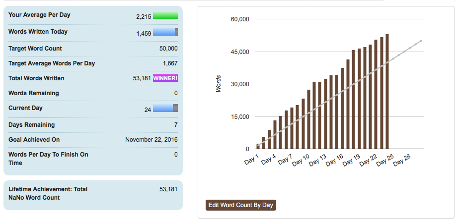

It’s been a while since I’ve posted (sorry, I’m still working hard on my next book) and hadn’t planned to post but this piece from Terry on Rosie’s blog deserves to be spread far and wide.
If you are an author and you ask someone for their honest opinion of your work, don’t get upset if they give it. Book bloggers are treasures. They should be encouraged, praised, and if possible given red wine and chocolates. These wonderful people give up their time, for free, to review books. And as every book is a piece of art, whether they like it or not is subjective (if you don’t believe me, look up the one-star reviews on your favourite book).
A well-thought out review is a gift, whether positive or negative, and if you don’t think you can react well to somebody not liking your book, then you should think long and hard about publishing it at all.

… me!
I have to admit, I was a little dubious about NaNoWriMo before starting. Yes, I saw the value of creating a community of like-minded individuals all focussing on one goal, but at the same time 1667 words a day, while not a huge amount on a single day, is a lot of writing day in, day out, for a month.
So what have I learned?
1 Having a deadline really spurs you on
I know I work well to deadlines with my job but this was the first self-imposed deadline I’ve had for my writing and it really drove me on. By committing publicly to delivering something I found I was planning my days better, snatching the odd 30 minutes writing time when I could instead of sitting in front of the box, and generally doing all I could – without upsetting my family – to hit my goal.
2 I can write faster than I thought
When writing my first three novels, on a good day i could hit between 2000 to 2500 words. My best was just over 3000 words, yet there were a number of times during the past month where I wrote well over 4000 words in a day. This may have had something to do with the story itself, having a clear target or just generally being more focussed, but when writing in the future my expectations of what’s achievable has changed.
3 Not stopping to edit works
I’ve always been a believer of not looking back when writing your first draft but this year I took it a step further than I’ve done in the past. Where I used to correct the odd sentence or paragraph I was which I was particularly unhappy, for NaNoWriMo I just left comments in red all over my MS on areas I felt needed work or where I had a change of plan, but then carried on going. While this was a great help to hit the word count, it will be interesting to see how the first rewrite goes!
4 The joy of overwriting
One of my favourite discoveries during NaNoWriMo was how much fun over-writing is. What do I mean by this? In my case it was allowing myself to describe settings or characters in more detail than was needed, or to write far too much exposition than would be in the final book. This is a big change for me. I usually write sparingly and go back to add further detail later, but this time around over-writing really helped me get under the skin of the world and the story I created. I know a lot of what I’ve written will be (rightly) cut during the edit but it has been fun letting myself go a allowing myself time to explore the people and settings I’ve created.
5 I’ve been introduced to even more lovely writers
I’ve always maintained that one of the best things about writing is the supportive community, and through NaNoWriMo I’ve got to meet a lot of new supportive and encouraging writers. Sadly I haven’t been able to go to any meet ups but the response on the NaNoWriMo regional message board has been really positive. Next year I’ll definitely attend.
Of course, my first draft isn’t finished. I’m not sure whether I’ll hit my extended goal of finishing it by the end of the month but it will be really close and I can’t wait to then get my teeth into it and start editing in the new year.
So what about you? If you’ve taken part in NaNoWriMo this year, what has been your experience? If you haven’t, have I persuaded you to do it next year? I look forward to hearing from you.


COMMENTS
6 COMMENTS